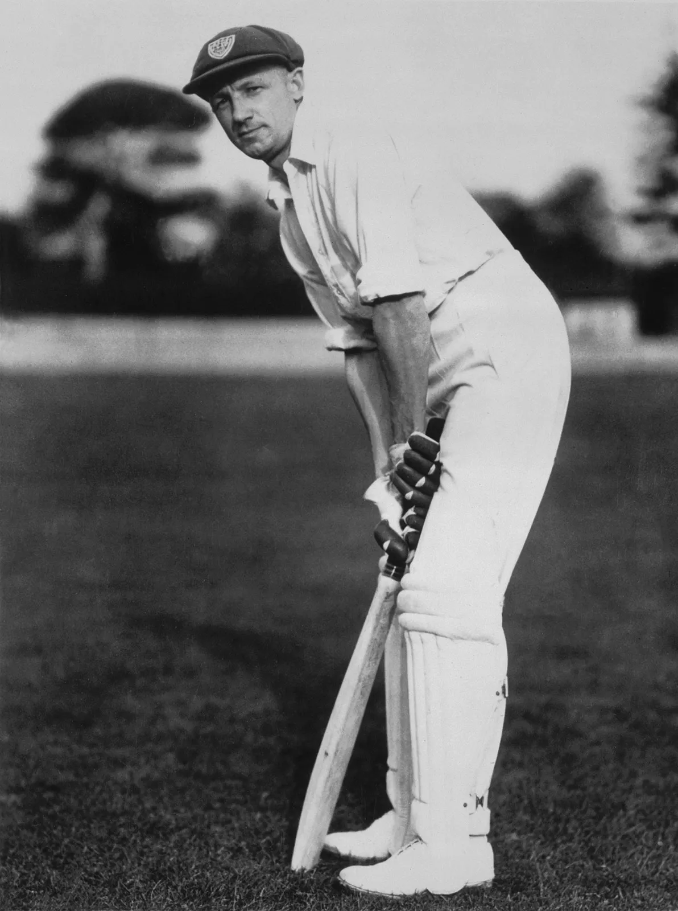
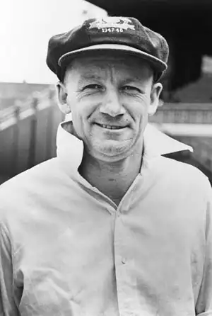

Sir Donald George Bradman
The greatest batsman of all time


Don Bradman during ashes against England in the year 1948
Here's a time line of Don Bradman's life:
- 1908 - Born in Cootamundra, New South Wales
- 1927 - Begins playing for New South Wales, completes the first of his 117 first-class centuries
- 1928 - Begins playing for Australia
- 1930 - Scores an average of 139.14 and becomes a hero to fansMarries Jessie Menzies
- 1932 - Marries Jessie Menzies
- 1935 - Moves to Adelaide, works as a stockbroker
- 1938 - Breaks ankle, spends much of the season out of play
- 1939 - Volunteers for Royal Australian Air Force at outbreak of WWII
- 1946 - Returns to cricket and leads Australia to victory
- 1948 - Retires from play after a whole season without a loss
- 1949 - Becomes first cricketer to be knighted before retirement
- 1960 - Became Chair of Board of Control
- 2001 - Dies at his home in Adelaide, Australia
"As long as Australia has Bradman she will be invincible...
It is almost time to request a legal limit on the number of runs Bradman should be allowed to make."
-- News Chronicle, London
If you have time, you should read more about this incredible human being on his Wikipedia entry.